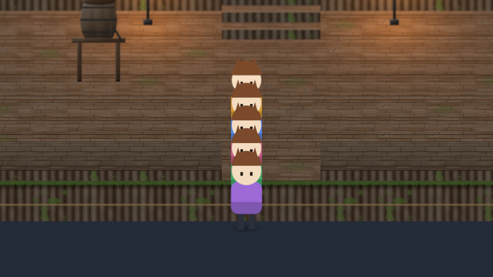
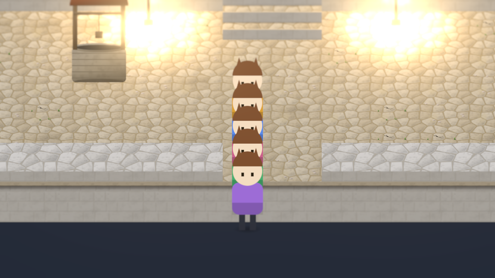

Summoner town
The wilds, a marsh town: dark timber and boardwalk streets, log terraces, reed thatch, moss green and amber cloth, a rain barrel on its post, a willow, amber lamps.

Healer town
The pilgrim’s road, a coast town: whitewash with sea-blue trim, terracotta roofs with blue glazed tiles, sandy flagstones, pale gold cloth, a domed well, a palm, shrine lamps.